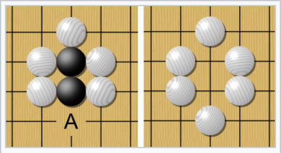

Introduction¶
Ce site est créé avec sphinx présenter les projets de fin d’année de la classe OC informatique. Le format et la structure de la page est identique au site modulo
Sur Github nous avons la structure
src
assets # copié de modulo
exts # copié de modulo
projet # projets des élèves
media # dossier pour images
code # dossier pour code
index.md # page de départ
projet.md # page projet d'élève
static # copié de moduloe
requirements.text # les modules Python à installer
Voici une image dans le dossier media.

Installation¶
Voici les étapes à faire chez vous
installer GitHub Desktop
installer VS Code
VS Code¶
Installer les extensions
Python extension for Visual Studio Code (de Microsoft)
Live Server (de Ritwick Dey)
dans la console VS Code
pip3 install -r requirements.txt
### Créer pages web
Pour créer les pages web dans le dossier `build``
sphinx-build src/projet build -E
Pour publier les pages HTML nous utilisons GitHub Pages et le package Python ghp-import qu’il faut installer avec pip.
pip3 install ghp-import
Pour puplier les pages HTML il suffit de lancer
user@pc oc-2021 % ghp-import -n -p -f build
Enumerating objects: 103, done.
Counting objects: 100% (103/103), done.
Delta compression using up to 8 threads
Compressing objects: 100% (84/84), done.
Writing objects: 100% (85/85), 568.56 KiB | 10.73 MiB/s, done.
Total 85 (delta 16), reused 1 (delta 0), pack-reused 0
remote: Resolving deltas: 100% (16/16), completed with 6 local objects.
To https://github.com/Bugnon/oc-2021.git
16ef47a..ed19f48 gh-pages -> gh-pages